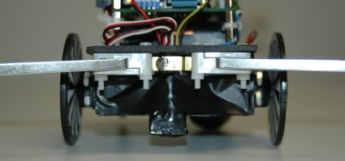
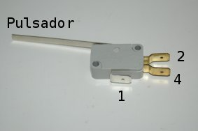
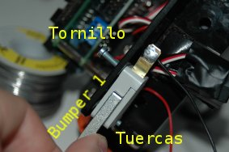
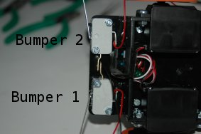
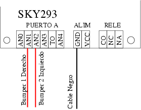
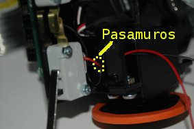

|
Taller de Robótica Básico - Skybot v1.4. -
SESION 2. Preparación de los sensores de contacto
|

Introducción
Vamos a colocar los sensores de
contacto o bumpers en el robot. Los situaremos en la parte
frontal y nos servirán para detectar obstáculos delante
del robot. El funcionamiento de un Bumper es muy sencillo,
básicamente es un interruptor, de tal manera que al apretar la
palanca se cierra un circuito. Nosotros utilizaremos esto para
introducir por uno de los pines del micro un "1" o un "0"
según tengamos o no apretado el bumper.
Materiales
-
2 Bumpers
-
2 cables rojos de 25 cm de
longitud
-
1 cable negro de 25 cm de longitud
-
4 tornillos de métrica 3mm
y 20 mm de longitud
-
4 tuercas de métrica 3mm
|
 |
Herramientas
|
 |
Construcción

Como se puede apreciar en la figura, cada bumper tiene tres
conectores. Si apretamos el pulsador lo que estamos haciendo es
cortocircuitar el conector 1 (abajo) con el conector 4 (lateral
inferior). Si no apretamos el pulsador el conector 1 estará
unido con el 2 (lateral superior).
Nosotros vamos a utilizar un circuito de Pull-UP que lleva
incorporada la SKY293, por lo que no es necesario utilizar los tres
conectores, nos bastará con dos. Por lo tanto vamos a proceder
a eliminar el conector 4 (lateral inferior) para que no nos moleste
al montar los bumpers en la estructura. Haremos esto en los dos bumpers.
Luego, soldaremos en el bumper 1 un cable rojo en el conector 1 y uno
negro en el conector 2. En el bumper 2 sólo se soldará
uno rojo en el conector 1.
El proceso se muestra en las siguientes figuras:
A continuación montaremos los bumpers en la estructura del
robot. El bumper uno lo situamos a la derecha y el dos a la izquierda.
Una vez que los hayamos atornillado
soldaremos el conector 2 de ambos bumpers. El proceso se describe
gráficamente a continuación:
| Paso 5) Bumper 1 Derecha |
Paso 6) Bumper 2 Izquierda |
 |
 |
Paso 7) Unimos el conector 2 de ambos bumpers.
Para ello soldamos los conectores. |
Paso 8) Detalle soldadura |
 |
 |
Para terminar hay que conectar los tres cables a las clemas de la
SKY293. Antes de eso, tendremos que pasar los cablecillos por los
pasamuros de la estructura mecánica.
Finalmente conectaremos el cable negro a la clema de alimentacion de
los bumpers, y en concreto al pin GND.
Luego el cable rojo del bumper 1 al pin AN1 y el cable rojo del bumper
2 al pin AN2.
Una vez más podemos ver el proceso gráficamente:
| Paso 9) Conexión de los bumpers. |
 |
| Paso 10) Pasar cables por los pasamuros. |
Paso 11) Montamos la SKYPIC |
 |
 |
Paso 12) Conectar los PUERTOS A de cada tarjeta mediante el segundo cable de BUS.
|
Software
En la siguiente tabla vemos la correspondencia entre las clemas de
la SKY293 y el Puerto A de la SKYPIC. Nosotros vamos a leer el estado
de los bumpers por el puerto A del PIC.
En ese puerto hay 6 entradas que se pueden configurar como entradas analógicas o como IOs digitales. Los bumpers son un sensor de entrada digital.
| SKY293 Puerto A |
SKYPIC Puerto A |
Descripción |
| AN0 |
PA0 |
--- |
| AN1 |
PA1 |
Cable rojo bumper 1 Derecho |
| AN2 |
PA2 |
Cable rojo bumper 2 Izquierdo |
| AN3 |
PA3 |
--- |
| TO |
PA4 |
--- |
| AN4 |
PA5 |
--- |
| Clema alimentacion |
|
|
| GND |
Cable negro bumpers |
| VCC |
NC |
Para la programación de los BUMPERS, siempre y cuando hayamos
seguido las instrucciones de esta página, tenemos que considerar
los siguientes estados:
| Estado |
Significado |
| Apretado |
bit de entrada a 1 |
| Libre |
bit de entrada a 0 |
[Sesión 2]
IEA ROBOTICS
Página creada por
Andrés Prieto-Moreno Torres